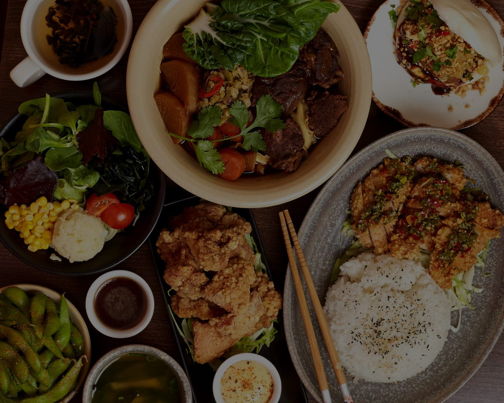
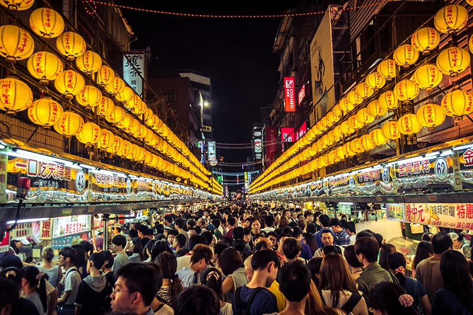
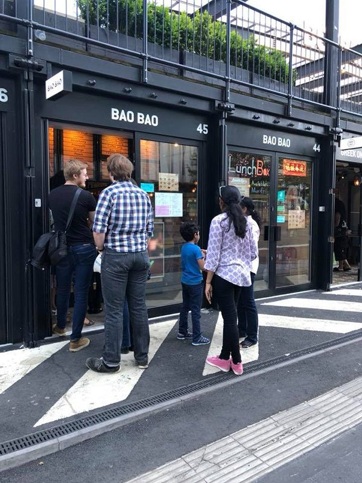

Authentic
Taiwanese food,
elevated
Where tradition meets sophistication. Savour the finest Taiwanese cuisine, thoughtfully crafted to elevate your dining experience.

Where tradition meets sophistication. Savour the finest Taiwanese cuisine, thoughtfully crafted to elevate your dining experience.


Taiwanese food is unique. Flavoured with a plethora of stand-alone dishes that will send you to Taiwan's Kaohsiung or Taipei in a matter of seconds without leaving your stool! Regardless of your taste buds or preferences, we at BAOBAO have you in mind!
Culinary Haven
Tripadvisor
Street Food Guide
Do you bao?
The streets of Taiwan, in Croydon
BAOBAO transports authentic Taiwanese street food to the heart of Croydon. Conveniently nestled inside the food & drink metropolis, Boxpark, we whisk you away to Taiwan, the undisputed mecca of street food.
Adorned with a traditional Hakka print, stylised Taiwanese flowers grace the interior of our restaurant, tantalising your eyes with a sense of beauty whilst savouring every bite. Whether you're tucking into our fried chicken bao, sweet potato fries or our selection of bubble teas.
Taiwan, a sub-tropical island only 444 miles from Hong Kong, is a foodie's paradise, full of wonderful people, captivating cultures, awe-inspiring landscapes and lush vegetation. Our food delivers the spirit of "xiaochi", Taiwanese small eats, with the BAOBAO touch added to every single dish we serve.